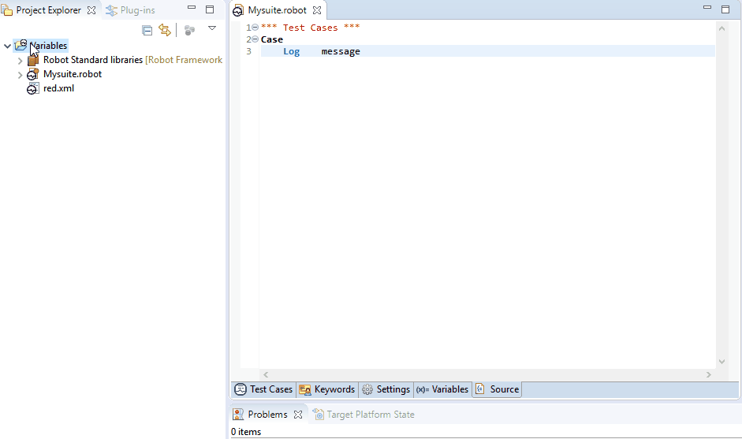

General info about Python variable files used in Robot Test Suites
RobotFramework allows to use Python variable files in Robot Test Suites in two distinctive ways.
Direct usage is done by using python file declaration in Settings section as follows:
Variables <path_to_python_var_file>
Variable file content will be visible across Test Suite.
Global usage is a way to use common variable file across any Test Suite.
In RED, this can be achieved by including variable files in RED.xml under Variable Files tab.
From Robot perspective this is done by using -V switch in command line.
Local Python variable files to deal with missing variables
In some test environments, Robot specific environments variables are used in test cases or injected as arguments to Robot test runner.
RED is not aware of such usage thus those variables will be marked as unknown, error marker will be placed.
In order to include variable name validation without changing test suites, user can create local Python file with list of variable names inside.
Such file can be included in RED.xml under Variable files section thus making RED aware of previously unknown variables.
Variables from such file will be visible as Global variables for all Robot files inside Project.
- Note
- Variables provided in red.xml are used only by RED for validation purpose and are not added to Robot run command line.
During test execution variables have to be provided by Robot.
Below is a sample body of such Python variable file (examples can be also found in RobotFramework official manual and Python examples).

#!python
#Sample variables and values
Scalar = 'value'
UserList = ['value1','value2']
UserDict ={'key1':'value1', 'key2':'value2'}
Reloading variable file content
Since version 0.6.6, RED can automatically invoke refresh of variable files being changed.
This can be done manually by clicking on Project by RMB and selecting Robot Framework -> Reset Robot Environment
